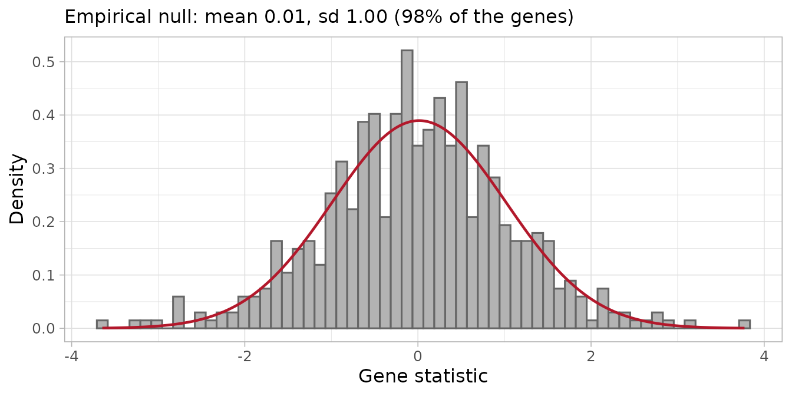
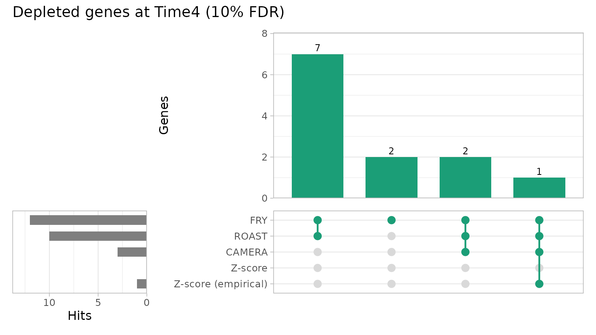
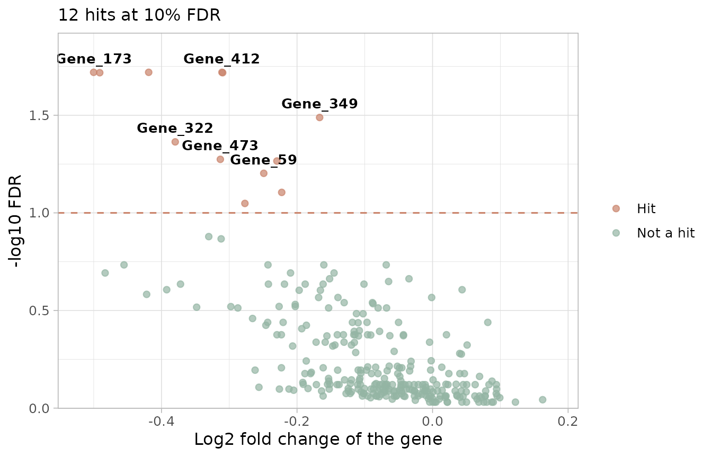
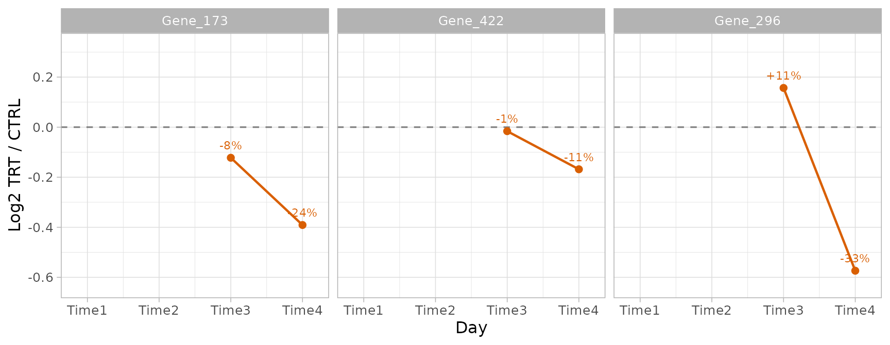
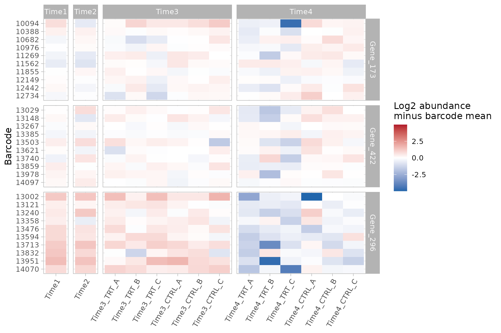

Tutorial 3: Finding and validating hits
Emanuel Michele Soda
Istituto Europeo Oncologia (IEO), Milano, Italyemanuelsoda@gmail.com
Elena Ceccacci
Istituto Europeo Oncologia (IEO), Milano, Italyelena.ceccacci@ieo.it
2026-10-25
Source:vignettes/Tutorial_3_Finding_hits.Rmd
Tutorial_3_Finding_hits.RmdAbout this tutorial
A hit is a gene whose barcodes change consistently in the treated samples compared with the control samples. In a dropout (loss of function) screen the interesting hits are usually depleted: their knockdown kills the cells only in the presence of the treatment.
This tutorial goes through the functions of ScreenR that find hits and check them, one step at a time:
- tell ScreenR which samples to compare (design matrix and contrasts);
- test each gene with FRY, ROAST and CAMERA;
- test each gene with the Z-score methods;
- compare the methods and combine their results;
- use several time points;
- check the candidates in the data, barcode by barcode.
It uses the example screen of ScreenR. The complete analysis of this screen, from the quality control to the list of the genes to validate, is in the longitudinal screen vignette; here the focus is on how each function works and how to read its result.
The data
The plots of ScreenR have no theme of their own: choose one for the
whole session with theme_set().
theme_set(theme_light(base_size = 12))The screen has two samples taken before the treatment
(Time1, before the infection, and Time2, after
the puromycin selection), then three treated (TRT) and
three control (CTRL) replicates 7 days (Time3)
and 14 days (Time4) after the selection. The
sample_table describes the samples, the groups
(used by the statistical models) are the combinations of time point and
treatment, and the palettes give each value of the sample
variables the same color in every plot.
data(count_table)
data(annotation_table)
samples <- data.frame(
Sample = c("Time1", "Time2",
paste0("Time3_TRT_", c("A", "B", "C")),
paste0("Time3_CTRL_", c("A", "B", "C")),
paste0("Time4_TRT_", c("A", "B", "C")),
paste0("Time4_CTRL_", c("A", "B", "C"))),
Day = c("Time1", "Time2", rep(c("Time3", "Time4"), each = 6)),
Treatment = c("Time1", "Time2", rep(rep(c("TRT", "CTRL"), each = 3), 2))
)
groups <- factor(ifelse(samples$Day %in% c("Time1", "Time2"), "T1/T2",
paste(samples$Day, samples$Treatment, sep = "_")))
counts <- filter(count_table, Barcode != "*")
colnames(counts) <- c("Barcode", samples$Sample)
object <- create_screenr_object(
table = counts, annotation = annotation_table, groups = groups,
sample_table = samples,
palettes = list(
Treatment = c(Time1 = "#CCCCCC", Time2 = "#999999",
CTRL = "#1B9E77", TRT = "#D95F02"),
Day = c(Time1 = "#CCCCCC", Time2 = "#999999",
Time3 = "#7570B3", Time4 = "#E7298A"),
Group = c(`T1/T2` = "#999999", Time3_CTRL = "#66C2A5",
Time3_TRT = "#FC8D62", Time4_CTRL = "#1B9E77",
Time4_TRT = "#D95F02")
)
)
object <- remove_all_zero_row(object)
get_sample_table(object)
#> # A tibble: 14 × 3
#> Sample Day Treatment
#> <chr> <chr> <chr>
#> 1 Time1 Time1 Time1
#> 2 Time2 Time2 Time2
#> 3 Time3_TRT_A Time3 TRT
#> 4 Time3_TRT_B Time3 TRT
#> 5 Time3_TRT_C Time3 TRT
#> 6 Time3_CTRL_A Time3 CTRL
#> 7 Time3_CTRL_B Time3 CTRL
#> 8 Time3_CTRL_C Time3 CTRL
#> 9 Time4_TRT_A Time4 TRT
#> 10 Time4_TRT_B Time4 TRT
#> 11 Time4_TRT_C Time4 TRT
#> 12 Time4_CTRL_A Time4 CTRL
#> 13 Time4_CTRL_B Time4 CTRL
#> 14 Time4_CTRL_C Time4 CTRLThe counts are normalized once, and the same normalization is used by
every function below: the hit-finding methods, the fold changes and the
plots. TMM is used here, as in the longitudinal vignette (see
?normalize_data for the methods and for when TMM is
biased).
object <- normalize_data(object, method = "tmm")
get_normalization(object)$method
#> [1] "tmm"Overview of the methods
| Method | Function | What it tests | Reference | Uses replicates |
|---|---|---|---|---|
| FRY | find_roast_hit(method = "fry") |
The barcodes of the gene change | None (self-contained) | Yes |
| ROAST | find_roast_hit() |
As FRY, with random rotations | None (self-contained) | Yes |
| CAMERA | find_camera_hit() |
The barcodes of the gene change more than the others | The other genes (competitive) | Yes |
| Gene-level Z-score | find_gene_zscore_hit() |
The mean Z-score of the barcodes of the gene is extreme | Random sets of barcodes, or the empirical null | With compute_barcode_statistics()
|
| All time points | find_consistent_hit() |
The gene changes at every time point | As the chosen method | Yes |
| Time course | find_time_hit() |
The treatment effect changes over time | None | Yes |
| Legacy Z-score rules |
find_zscore_hit(),
find_robust_zscore_hit()
|
Counts barcodes below the median Z-score | None | No |
The FDR (false discovery rate) is the expected
proportion of false hits among the genes you call hits: with an FDR cut
off of 5%, about 1 in 20 of the reported genes is expected to be a false
positive. Each method returns only the genes with
FDR <= fdr (default 0.05); use fdr = 1 to
get all the genes and rank them yourself, as done below.
Step 1: which samples to compare
The methods that use the replicates fit a linear model, which needs two things:
- a design matrix, which says which group each sample belongs to;
- a contrast, which says which groups to compare.
create_design_matrix() builds the design matrix from the
groups of the object: one column per group, and a 1 in the column of the
group of each sample. Group names that are not valid R names are changed
(T1/T2 becomes T1.T2).
design <- create_design_matrix(object)
design
#> T1.T2 Time3_CTRL Time3_TRT Time4_CTRL Time4_TRT
#> Time1 1 0 0 0 0
#> Time2 1 0 0 0 0
#> Time3_TRT_A 0 0 1 0 0
#> Time3_TRT_B 0 0 1 0 0
#> Time3_TRT_C 0 0 1 0 0
#> Time3_CTRL_A 0 1 0 0 0
#> Time3_CTRL_B 0 1 0 0 0
#> Time3_CTRL_C 0 1 0 0 0
#> Time4_TRT_A 0 0 0 0 1
#> Time4_TRT_B 0 0 0 0 1
#> Time4_TRT_C 0 0 0 0 1
#> Time4_CTRL_A 0 0 0 1 0
#> Time4_CTRL_B 0 0 0 1 0
#> Time4_CTRL_C 0 0 0 1 0
#> attr(,"assign")
#> [1] 1 1 1 1 1
#> attr(,"contrasts")
#> attr(,"contrasts")$groups
#> [1] "contr.treatment"create_contrast() builds the comparison between groups
by name: here treated against control at each time point.
contrast_time3 <- create_contrast(design,
treatment = "Time3_TRT", control = "Time3_CTRL"
)
contrast_time4 <- create_contrast(design,
treatment = "Time4_TRT", control = "Time4_CTRL"
)
contrast_time4
#> T1.T2 Time3_CTRL Time3_TRT Time4_CTRL Time4_TRT
#> 0 0 0 -1 1The contrast gives +1 to the treated group and -1 to the control
group: the result is the treated minus the control. With several groups
on one side (for example
treatment = c("Time3_TRT", "Time4_TRT")) their average is
used.
Common mistake. Do not build the design with
model.matrix(~ groups) and rename its columns: the first
group becomes the intercept and the columns are in alphabetical order,
so the names end up on the wrong columns and the wrong samples are
compared. create_design_matrix() and
create_contrast() avoid this, and every function that takes
a design checks that its rows are the samples of the object, in the same
order.
The examples below compare treated and control samples at Time4, the time point with the larger effect.
Step 2: FRY, ROAST and CAMERA
These methods test the barcodes of each gene as a set, with edgeR on the raw counts and the normalization of the object.
-
FRY and ROAST ask whether the barcodes of a gene
change at all (a self-contained test). ROAST uses
random rotations: set
seedto get the same result every time and use many rotations (nrot, default 9999) for a real analysis; here 999 keep the tutorial fast. FRY (method = "fry") computes the same test exactly, without rotations: it is faster, its p-values are not limited by the number of rotations, and it is the recommended choice. - CAMERA asks whether the barcodes of a gene change more than the other barcodes (a competitive test), taking into account the correlation between barcodes.
The two kinds of tests answer different questions. A self-contained test calls a gene when its barcodes are depleted more than the replicates vary, even if many genes are depleted; a competitive test calls it only when it stands out from the rest of the library, so it becomes conservative when many genes have an effect. On the other hand FRY and ROAST rely on the variability between replicates: they need replicates in both groups, have little power with two replicates or noisy data, and find almost nothing when the control is a single sample (for example a plasmid library). All the p-values are one-sided, for the requested direction.
number_barcode sets the minimum number of barcodes (more
than number_barcode) a gene needs to be tested, and
direction chooses depleted ("Down") or
enriched ("Up") genes.
fry <- find_roast_hit(object, design, contrast_time4,
method = "fry", fdr = 1
)
head(fry)
#> # A tibble: 6 × 8
#> Gene NGenes Direction PValue FDR PValue.Mixed FDR.Mixed Log2FC
#> <chr> <int> <fct> <dbl> <dbl> <dbl> <dbl> <dbl>
#> 1 Gene_173 10 Down 0.0000891 0.0191 0.00000244 0.000217 -0.500
#> 2 Gene_422 10 Down 0.0000933 0.0191 0.0000525 0.00156 -0.419
#> 3 Gene_412 10 Down 0.000107 0.0191 0.00000579 0.000309 -0.311
#> 4 Gene_15 10 Down 0.000166 0.0191 0.00724 0.0390 -0.310
#> 5 Gene_296 10 Down 0.000179 0.0191 0.0158 0.0615 -0.491
#> 6 Gene_349 10 Down 0.000365 0.0325 0.00000000678 0.00000121 -0.167
roast <- find_roast_hit(object, design, contrast_time4,
nrot = 999, seed = 42, fdr = 1
)
camera <- find_camera_hit(object, design, contrast_time4, fdr = 1)
head(camera)
#> # A tibble: 6 × 6
#> Gene NGenes Direction PValue FDR Log2FC
#> <chr> <dbl> <fct> <dbl> <dbl> <dbl>
#> 1 Gene_173 10 Down 0.000218 0.0767 -0.500
#> 2 Gene_296 10 Down 0.000421 0.0767 -0.491
#> 3 Gene_422 10 Down 0.000431 0.0767 -0.419
#> 4 Gene_352 10 Down 0.00179 0.230 -0.455
#> 5 Gene_87 10 Down 0.00241 0.230 -0.422
#> 6 Gene_370 10 Down 0.00300 0.230 -0.330| Column | Meaning |
|---|---|
NGenes |
Number of barcodes of the gene |
Direction |
Down or Up |
PValue, FDR
|
Significance for the requested direction |
PValue.Mixed, FDR.Mixed (FRY, ROAST) |
Significance of a change in either direction of the barcodes |
PropDown, PropUp (ROAST) |
Proportion of barcodes going down or up |
Log2FC |
Median log2 fold change of the barcodes |
Use PValue and FDR: the “Mixed” columns
test whether the barcodes change in any direction, so they also call
genes whose barcodes disagree.
Step 3: the Z-score methods
Fold changes and Z-scores
compute_metrics() averages the replicates of the treated
and of the control samples of one time point and computes for each
barcode:
| Column | Meaning |
|---|---|
Treated, Control
|
Mean normalized count |
Log2FC |
log2((Treated + 0.5) / (Control + 0.5)): negative means depleted in the treated samples |
Zscore |
Log2FC standardized with the mean and standard deviation of all barcodes |
ZscoreRobust |
Log2FC standardized with the median and MAD, less sensitive to outliers |
The treatment and control arguments are
values of the Treatment column of get_sample_table(), and
day a value of its Day column.
metrics_time3 <- compute_metrics(object,
control = "CTRL", treatment = "TRT", day = "Time3"
)
metrics_time4 <- compute_metrics(object,
control = "CTRL", treatment = "TRT", day = "Time4"
)
head(metrics_time4)
#> # A tibble: 6 × 9
#> Barcode Gene Treated Control Log2FC Zscore ZscoreRobust Day Treatment
#> <fct> <chr> <dbl> <dbl> <dbl> <dbl> <dbl> <chr> <chr>
#> 1 10208 Gene_380 395. 365. 0.111 0.289 0.331 Time4 TRT
#> 2 10502 Gene_380 27.8 37.9 -0.441 -0.863 -1.25 Time4 TRT
#> 3 10796 Gene_380 35.7 59.0 -0.718 -1.44 -2.04 Time4 TRT
#> 4 11089 Gene_380 294. 327. -0.152 -0.259 -0.421 Time4 TRT
#> 5 11382 Gene_380 26.8 43.0 -0.671 -1.34 -1.91 Time4 TRT
#> 6 11675 Gene_380 813. 982. -0.272 -0.509 -0.764 Time4 TRTplot_zscore_distribution() compares the Z-scores of
several time points: a treatment with an effect gives a longer left tail
at the later time point. It receives the tables, not the object, so the
palette of the time points is given explicitly to keep the colors of the
other plots:
plot_zscore_distribution(
list(Time3 = metrics_time3, Time4 = metrics_time4),
alpha = 0.6, palette = get_palettes(object)$Day
)
Using the replicates
compute_metrics() averages the replicates, so it cannot
tell a consistent barcode from a noisy one.
compute_barcode_statistics() tests each barcode with edgeR,
using the variability between replicates, and returns a Z-score with the
same columns. This is the recommended input of the gene-level test.
barcode_statistics <- compute_barcode_statistics(
object, design, contrast_time4
)
head(barcode_statistics)
#> # A tibble: 6 × 8
#> Barcode Gene Log2FC logCPM F PValue FDR Zscore
#> <chr> <chr> <dbl> <dbl> <dbl> <dbl> <dbl> <dbl>
#> 1 10208 Gene_380 0.124 8.56 0.566 0.455 0.801 0.748
#> 2 10502 Gene_380 -0.464 4.97 0.702 0.405 0.776 -0.832
#> 3 10796 Gene_380 -0.650 6.60 2.36 0.129 0.525 -1.52
#> 4 11089 Gene_380 -0.153 8.44 0.818 0.369 0.749 -0.898
#> 5 11382 Gene_380 -0.636 5.62 1.37 0.247 0.655 -1.16
#> 6 11675 Gene_380 -0.271 9.66 5.92 0.0178 0.251 -2.37Gene-level test
find_gene_zscore_hit() computes for each gene the mean
Z-score of its barcodes (statistic = "median" uses the
median, which is less affected by a single barcode with a strong,
possibly off-target, effect) and compares it with a reference
distribution:
-
reference = "random"(default): the scores of random sets of barcodes of the same size, drawnn_permutationstimes (seedmakes it reproducible). Withcontrol_genesthe random sets are drawn from control genes instead. Do this only if the controls behave like genes without effect: non-targeting shRNAs often do not (targeting shRNAs are usually somewhat depleted compared with them, so every gene looks depleted). -
reference = "empirical": the distribution of the scores of the genes without effect, estimated from the centre of the distribution of all the genes. It accounts for the barcodes of a gene varying together, which makes the random sets give too small p-values, especially in shRNA screens. It needs a library with hundreds of genes, most of them without effect (see the empirical null vignette).
zscore <- find_gene_zscore_hit(barcode_statistics, fdr = 1, seed = 1)
zscore_empirical <- find_gene_zscore_hit(barcode_statistics,
reference = "empirical", fdr = 1
)
head(zscore_empirical)
#> # A tibble: 6 × 7
#> Gene NBarcodes Score Log2FC Statistic PValue FDR
#> <chr> <int> <dbl> <dbl> <dbl> <dbl> <dbl>
#> 1 Gene_173 10 -1.53 -0.506 -3.65 0.000135 0.0719
#> 2 Gene_422 10 -1.39 -0.436 -3.31 0.000474 0.127
#> 3 Gene_15 10 -1.31 -0.305 -3.12 0.000901 0.155
#> 4 Gene_296 10 -1.28 -0.477 -3.05 0.00116 0.155
#> 5 Gene_370 10 -1.19 -0.378 -2.83 0.00235 0.223
#> 6 Gene_168 10 -1.15 -0.242 -2.74 0.00306 0.223| Column | Meaning |
|---|---|
NBarcodes |
Number of barcodes of the gene |
Score |
Mean Z-score of the barcodes |
Log2FC |
Median log2 fold change of the barcodes |
PValue, FDR
|
Significance |
plot_empirical_null() shows the gene scores and the
fitted null, which should follow the centre of the distribution:
plot_empirical_null(barcode_statistics)
Here the null is almost the standard normal (mean 0.01, standard deviation 1), with no long tail of depleted genes: the treatment effect is moderate and concerns a few genes.
Legacy rules
find_zscore_hit() and
find_robust_zscore_hit() call a gene a hit when more than
number_barcode of its barcodes are below the median
Z-score. They are kept for compatibility, but they do not give a p-value
and many genes without an effect pass them by chance (about 17% with 10
barcodes and number_barcode = 6): prefer
find_gene_zscore_hit().
nrow(find_zscore_hit(metrics_time4, number_barcode = 6))
#> [1] 96Step 4: comparing and combining the methods
How many genes each method finds
results <- list(
FRY = fry, ROAST = roast, CAMERA = camera,
`Z-score` = zscore, `Z-score (empirical)` = zscore_empirical
)
fdr_levels <- c(0.05, 0.1, 0.25)
bind_rows(lapply(results, function(result) {
vapply(fdr_levels, function(x) sum(result$FDR <= x), integer(1))
}), .id = "Method") %>%
mutate(FDR = paste0(100 * fdr_levels, "%"), .before = 1)
#> # A tibble: 3 × 6
#> FDR FRY ROAST CAMERA `Z-score` `Z-score (empirical)`
#> <chr> <int> <int> <int> <int> <int>
#> 1 5% 7 0 0 0 0
#> 2 10% 12 10 3 0 1
#> 3 25% 34 28 7 4 8FRY, the most powerful test here, finds 7 genes at 5% FDR. ROAST
tests the same hypothesis, but with 999 rotations its p-values cannot be
smaller than 1/1000, which after the correction for the 283 genes is not
enough to reach 5% (use nrot = 9999, or FRY). The
competitive tests (CAMERA and the Z-score tests) find none at 5%: the
depletions are reproducible, but they do not stand out against all the
other genes of the library. Choose the cut off before looking at the
results and report it; below, 10% is used to compare the methods.
Overlap between the methods
plot_common_hit() takes the results of any number of
methods (any table with Gene and FDR) and shows the overlap of their
hits at the cut off given with fdr. With up to three
methods it draws a Venn diagram:
plot_common_hit(results[c("FRY", "ROAST", "CAMERA")], fdr = 0.1,
title = "Depleted genes at Time4 (10% FDR)")
With more methods it draws an UpSet plot: each column is a combination of methods (the dots below), and the bar on top counts the genes found by exactly that combination; the bars on the left count the genes found by each method.
plot_common_hit(results, fdr = 0.1,
title = "Depleted genes at Time4 (10% FDR)")
find_common_hit() returns the genes found by at least
common_in methods (by default by all of them):
common <- find_common_hit(results, fdr = 0.1, common_in = 3)
common
#> [1] "Gene_173" "Gene_422" "Gene_296"summarise_hits() puts the FDR of every method in one
table. NMethods counts the methods in which the gene passes
the cut off, and MaxFDR (the largest FDR) is a conservative
score to rank the genes supported by all the methods. Pass the tables
computed with fdr = 1, so that every gene has a value.
summary <- summarise_hits(results, fdr = 0.1)
summary %>%
select(Gene, starts_with("FDR"), NMethods) %>%
head(8) %>%
knitr::kable(digits = 3)| Gene | FDR_FRY | FDR_ROAST | FDR_CAMERA | FDR_Z-score | FDR_Z-score (empirical) | NMethods |
|---|---|---|---|---|---|---|
| Gene_173 | 0.019 | 0.076 | 0.077 | 0.123 | 0.072 | 4 |
| Gene_422 | 0.019 | 0.076 | 0.077 | 0.192 | 0.127 | 3 |
| Gene_296 | 0.019 | 0.076 | 0.077 | 0.203 | 0.155 | 3 |
| Gene_15 | 0.019 | 0.076 | 0.230 | 0.203 | 0.155 | 2 |
| Gene_370 | 0.132 | 0.144 | 0.230 | 0.271 | 0.223 | 0 |
| Gene_352 | 0.185 | 0.173 | 0.230 | 0.271 | 0.223 | 0 |
| Gene_87 | 0.261 | 0.267 | 0.230 | 0.271 | 0.223 | 0 |
| Gene_349 | 0.032 | 0.076 | 0.254 | 0.363 | 0.311 | 2 |
plot_volcano() shows every gene with its effect (x) and
its significance (y): the hits are above the dashed line, and the most
significant are labelled. Here the 12 genes that FRY finds at 10%
FDR:
plot_volcano(fry, fdr = 0.1)
With the table of summarise_hits() the significance is
the largest FDR of the methods, so the genes above the line are found by
every method; give the barcode statistics, from which the mean log2 fold
change of each gene is computed:
plot_volcano(summary, statistics = barcode_statistics).
None of the genes of this screen is found by all five methods at 10%
FDR.
The combined list has no guaranteed false discovery rate: treat it as a short list of candidates to check and validate.
Step 5: several time points
“Depleted over time” can mean different things, which need different tests.
Depleted at every time point
find_consistent_hit() runs the same method for several
contrasts and calls a gene only if it is depleted in
all of them (an intersection-union test: the p-value of
the gene is the largest of its p-values, then corrected for the number
of genes).
consistent <- find_consistent_hit(object, design,
contrasts = list(Time3 = contrast_time3, Time4 = contrast_time4),
method = "fry", fdr = 1
)
head(consistent)
#> # A tibble: 6 × 9
#> Gene Direction NContrasts PValue FDR PValue_Time3 Log2FC_Time3
#> <chr> <chr> <int> <dbl> <dbl> <dbl> <dbl>
#> 1 Gene_173 Down 2 0.00986 1.000 0.00986 -0.211
#> 2 Gene_457 Down 2 0.0377 1.000 0.00858 -0.121
#> 3 Gene_121 Down 2 0.0428 1.000 0.0428 -0.0741
#> 4 Gene_293 Down 2 0.0516 1.000 0.0516 -0.134
#> 5 Gene_394 Down 2 0.0577 1.000 0.0577 -0.0813
#> 6 Gene_377 Down 2 0.0707 1.000 0.00138 -0.249
#> # ℹ 2 more variables: PValue_Time4 <dbl>, Log2FC_Time4 <dbl>The smallest FDR is 1: no gene is depleted at both time points. The
candidates of Time4 have small effects at Time3 (see
Log2FC_Time3), so in this screen the treatment-specific
depletion appears at the later time point.
combine_consistent_hits() does the same with tables of
p-values computed beforehand.
A treatment effect that changes over time
find_time_hit() asks whether the treatment effect
changes over time, with one model for the treated and
control samples of all the time points: untreated and treated samples
each follow a line over time, and the method tests the difference
between the slopes. Give the real times of the time points with
time (here days after the selection); otherwise they are
treated as equally spaced. Samples taken before the treatment can be
added as untreated samples with baseline, when their times
are known too.
time_hit <- find_time_hit(object,
treatment = "TRT", control = "CTRL",
days = c("Time3", "Time4"), time = c(Time3 = 7, Time4 = 14),
fdr = 1
)
head(time_hit)
#> # A tibble: 6 × 6
#> Gene NGenes Direction PValue FDR Log2FC
#> <chr> <dbl> <fct> <dbl> <dbl> <dbl>
#> 1 Gene_296 10 Down 0.000596 0.318 -0.0964
#> 2 Gene_372 12 Down 0.00156 0.323 -0.104
#> 3 Gene_422 10 Down 0.00181 0.323 -0.0672
#> 4 Gene_412 10 Down 0.00480 0.483 -0.0812
#> 5 Gene_419 10 Down 0.00510 0.483 -0.0826
#> 6 Gene_87 10 Down 0.00566 0.483 -0.0585Log2FC is the change of the treatment log2 fold change
per day: a negative value means that the depletion grows over time. With
two time points this is the difference between the effects at Time4 and
at Time3, divided by 7 days. Here 0 genes have an FDR below 5% (smallest
FDR 0.32): the effects grow between the two time points, but not enough
to be detected gene by gene with three replicates.
Step 6: checking the candidates
Statistics can produce false positives, so look at the data of each candidate. The candidates here are the genes found by at least three of the five methods at 10% FDR:
candidates <- common
candidates
#> [1] "Gene_173" "Gene_422" "Gene_296"Trend over time
plot_trend() shows the mean normalized count of the
barcodes of a gene in each sample over the time points. With
color_by the treated and control samples get their own
trend (the mean of each time point), the samples before the treatment
are drawn once as shared references (reference_groups), and
highlight_difference shades the gap between the two
conditions. A treatment-specific hit goes down in the treated samples
more than in the controls.
plot_trend(object,
genes = candidates, group_var = c("Time1", "Time2", "CTRL", "TRT"),
color_by = "Treatment", reference_groups = c("Time1", "Time2"),
connect_reference = TRUE, highlight_difference = TRUE,
nrow = 1, scales = "free_y"
) +
labs(x = "Time point (equally spaced)",
y = "Mean normalized counts per shRNA")
Size of the effect
plot_treatment_separation() shows the log2 ratio of the
treated to the control samples at each time point, labelled with the
percentage difference. It shows how far the conditions separate and at
which time point; it is descriptive, not a test.
Gene_173 and Gene_422 decrease in the treated samples while the controls stay stable or grow. Gene_296 decreases in the controls too (its knockdown slows growth even without the treatment), and more in the treated samples: the treatment adds to a fitness effect.
plot_treatment_separation(object, candidates,
treatment = "TRT", control = "CTRL", nrow = 1
)
Distribution of the barcodes
plot_boxplot() shows the normalized counts of all the
barcodes of a gene in each sample, colored by the variable given with
fill_var (here with the palette of the Treatment):
plot_boxplot(object,
genes = candidates[1], group_var = c("TRT", "CTRL"),
fill_var = "Treatment"
) +
scale_x_discrete(guide = guide_axis(angle = 45))
Barcode by barcode
A real hit should be supported by most of its barcodes, not by one or
two. plot_barcode_heatmap() shows every barcode of the
genes in every sample, centred on the mean of the barcode across the
samples shown: blue is lower and red higher than the usual abundance of
the barcode.
plot_barcode_heatmap(object, candidates, column_group = "Day") +
scale_x_discrete(guide = guide_axis(angle = 60))
At Time4 several barcodes of each gene are lower in the treated samples than in the controls, so the depletion is not driven by a single barcode; it is clearest for Gene_296. The effects are moderate, and they vary between the replicates.
plot_barcode_trend() shows the log2 fold change of each
barcode at each time point (it returns one plot per gene):
barcode_trends <- plot_barcode_trend(
list(Time3 = metrics_time3, Time4 = metrics_time4),
genes = candidates[1]
)
barcode_trends[[candidates[1]]]
plot_barcode_hit() ranks all the barcodes by their log2
fold change and places the barcodes of a gene on the ranking (vertical
lines): most lines on the left side means that the gene is depleted. The
line on top shows where the barcodes of the gene are concentrated (above
1, dashed line), and the bottom panel shows their log2 fold changes
(show_log2fc = FALSE hides it):
plot_barcode_hit(object, design,
contrast = contrast_time4, gene = candidates[1]
)
find_discordant_barcodes() lists the barcodes that
behave very differently from the other barcodes of their gene, which may
have off-target effects. They are a warning to read the result of the
gene with care; do not remove them before the tests.
discordant <- find_discordant_barcodes(metrics_time4, threshold = 3)
filter(discordant, Gene %in% candidates)
#> # A tibble: 0 × 5
#> # ℹ 5 variables: Barcode <fct>, Gene <chr>, Log2FC <dbl>, GeneLog2FC <dbl>,
#> # Deviation <dbl>Additional filters
Two filters can remove candidates that are not convincing:
-
filter_by_slope()keeps the genes whose normalized counts decrease more over time in the treated samples than in the control samples (withtime, the slopes are per unit of time); -
filter_by_variance()removes the genes whose barcodes disagree too much (variance of the barcode log2 fold changes abovevariance).
filter_by_slope(object,
genes = candidates,
group_var_treatment = "TRT", group_var_control = "CTRL",
time = c(Time3 = 7, Time4 = 14)
)
#> # A tibble: 3 × 3
#> Gene slope_control slope_treatment
#> <chr> <dbl> <dbl>
#> 1 Gene_173 1.14 -3.47
#> 2 Gene_296 -4.64 -8.92
#> 3 Gene_422 2.98 -0.680
filter_by_variance(object,
genes = candidates, matrix_model = design,
contrast = contrast_time4, variance = 0.5
) %>%
distinct(Gene, Variance)
#> # A tibble: 3 × 2
#> Gene Variance
#> <chr> <dbl>
#> 1 Gene_173 0.325
#> 2 Gene_296 0.287
#> 3 Gene_422 0.226Summary
| Step | What to do |
|---|---|
| 1 |
create_design_matrix() and
create_contrast() for the comparison |
| 2 |
find_roast_hit(method = "fry");
find_camera_hit() for a competitive test |
| 3 |
compute_barcode_statistics() +
find_gene_zscore_hit(), with
reference = "empirical" for shRNA libraries |
| 4 |
plot_common_hit(), find_common_hit(),
summarise_hits() and plot_volcano()
|
| 5 |
find_consistent_hit() (every time point) and
find_time_hit() (an effect that changes over time) |
| 6 |
plot_trend(), plot_treatment_separation(),
plot_boxplot(), plot_barcode_heatmap(),
plot_barcode_hit(),
find_discordant_barcodes()
|
Choose the FDR cut off before the analysis, report it, and validate the candidates experimentally. The longitudinal screen vignette puts these steps together and ends with the genes of this screen to validate.
sessionInfo()
#> R version 4.6.1 (2026-06-24)
#> Platform: x86_64-pc-linux-gnu
#> Running under: Ubuntu 26.04.1 LTS
#>
#> Matrix products: default
#> BLAS: /usr/lib/x86_64-linux-gnu/openblas-pthread/libblas.so.3
#> LAPACK: /usr/lib/x86_64-linux-gnu/openblas-pthread/libopenblasp-r0.3.32.so; LAPACK version 3.12.0
#>
#> locale:
#> [1] LC_CTYPE=C.UTF-8 LC_NUMERIC=C LC_TIME=C.UTF-8
#> [4] LC_COLLATE=C.UTF-8 LC_MONETARY=C.UTF-8 LC_MESSAGES=C.UTF-8
#> [7] LC_PAPER=C.UTF-8 LC_NAME=C LC_ADDRESS=C
#> [10] LC_TELEPHONE=C LC_MEASUREMENT=C.UTF-8 LC_IDENTIFICATION=C
#>
#> time zone: UTC
#> tzcode source: system (glibc)
#>
#> attached base packages:
#> [1] stats graphics grDevices utils datasets methods base
#>
#> other attached packages:
#> [1] ggplot2_4.0.3 dplyr_1.2.1 ScreenR_1.15.16 BiocStyle_2.40.0
#>
#> loaded via a namespace (and not attached):
#> [1] SummarizedExperiment_1.42.0 gtable_0.3.6
#> [3] xfun_0.62 bslib_0.12.0
#> [5] htmlwidgets_1.6.4 Biobase_2.72.0
#> [7] lattice_0.22-9 vctrs_0.7.3
#> [9] tools_4.6.1 generics_0.1.4
#> [11] stats4_4.6.1 tibble_3.3.1
#> [13] pkgconfig_2.0.3 Matrix_1.7-5
#> [15] RColorBrewer_1.1-3 S7_0.2.2
#> [17] desc_1.4.3 S4Vectors_0.50.3
#> [19] lifecycle_1.0.5 compiler_4.6.1
#> [21] farver_2.1.2 stringr_1.6.0
#> [23] textshaping_1.0.5 statmod_1.5.2
#> [25] Seqinfo_1.2.0 htmltools_0.5.9
#> [27] sass_0.4.10 yaml_2.3.12
#> [29] tidyr_1.3.2 pillar_1.11.1
#> [31] pkgdown_2.2.1 jquerylib_0.1.4
#> [33] DelayedArray_0.38.2 cachem_1.1.0
#> [35] limma_3.68.5 abind_1.4-8
#> [37] tidyselect_1.2.1 locfit_1.5-9.12
#> [39] digest_0.6.39 stringi_1.8.9
#> [41] purrr_1.2.2 bookdown_0.48
#> [43] labeling_0.4.3 fastmap_1.2.0
#> [45] grid_4.6.1 cli_3.6.6
#> [47] SparseArray_1.12.3 magrittr_2.0.5
#> [49] patchwork_1.3.2 S4Arrays_1.12.1
#> [51] utf8_1.2.6 withr_3.0.3
#> [53] edgeR_4.10.7 scales_1.4.0
#> [55] rmarkdown_2.32 XVector_0.52.0
#> [57] matrixStats_1.5.0 otel_0.2.0
#> [59] ragg_1.5.2 evaluate_1.0.5
#> [61] knitr_1.52 GenomicRanges_1.64.0
#> [63] IRanges_2.46.0 rlang_1.3.0
#> [65] glue_1.8.1 BiocManager_1.30.27
#> [67] BiocGenerics_0.58.1 jsonlite_2.0.0
#> [69] R6_2.6.1 MatrixGenerics_1.24.0
#> [71] systemfonts_1.3.2 fs_2.1.0